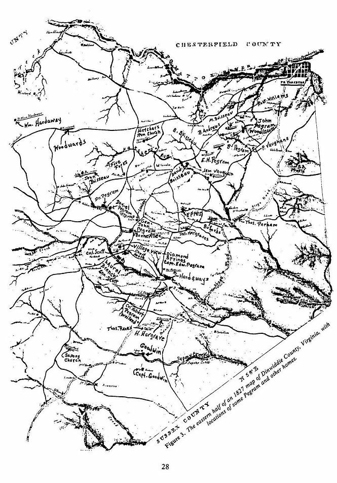

|
|
|||||||||
|
|
6 THE PEGRAMS OF DINWIDDIE AND
SOME An article in Tyler's Quarterly (43) entitled "Dr. James Greenway, eighteenth Century Botanist of Dinwiddie County, with account of two generations of his descendants", States that: "Dinwiddie County, at the close of the eighteenth century had numerous gentlemen who lived in considerable style on their plantations." It named individual families, including the PEGRAM family, the Boisseau, Dabney, Scott, Gregory, Mason, Hardaway and other families. The Pegrams married into all of these families. The Southside Virginia News of Petersburg published an article, 16 February 1967, entitled, "Bonneville Plantation Rich in History," which included exterior and interior photographs of this historic Pegram home. This was the Dinwiddie plantation home built by Major General John Pegrams about 1800. It is stated that "probably no family exceeded the early Pegrams in prominence." Virginia and Southern history carry the names of many members of the family. "Upon my word and honor" - "Virginia gentlemen of Dinwiddie County, Virginia as I knew them sixty five years ago"; written by Thomas H. Boisseau for the Index-Appeal of Petersburg, Virginia about 1867 (41).
The name Pegram is listed among the old and leading families in Eastern Virginia, in colonial times and immediately succeeding the Revolution (44). The sparse Dinwiddie County population of white males, age 16 and up, in 1790 belied their great influence, not only in Dinwiddie County, but in Virginia and the Nation. The 1790 census shows only 1790 free white males, 16 and up, 1396 free white males under 16, 2853 free white females, 561 all other free persons and 7,334 slaves, for a total population of 13,934. Slightly more than one half of the population was slaves. INTER-RELATIONSHIPS BETWEEN THE
PEGRAMS AND SOME Thomas H. Boisseau's description of the "Aristocratic" families of Dinwiddie portrays in a few words the kind of people they were, but who were these families? No attempt will be made to introduce but a few of them, but some knowledge of whom families associate with and marry, certainly adds to their characterization. Richard L. Jones (40) in his history of Dinwiddie County lists 90 old plantation homes, and includes illustrations of many that are still in existence. Most of these were originally built, or lived in, by the principal families of Dinwiddie County. The gentle rolling hills of Dinwiddie must have been especially productive to have generated so many wealthy plantation owners. The families also appear to have been of sturdy stock and good heritage to have produced so many successful descendants. Many were successful in business and government, and Dinwiddie seems to have provided more than its share of officers in all of this country's wars. The following were families that were closely associated with the Pegrams, and married into that family. THE SCOTT FAMILY - Of all the families in Virginia, the Scott family was more intimately associated with the Pegrams than any other. There were numerous marriages between them. Four of the children of Edward Pegram4 married Scotts, and there were others that will be discussed later. Both the Pegram and Scott families married into the Hardaway family. There were apparently two Scott families in Dinwiddie. Thomas Scott had a patent for 770 acres of land before the arrival in Dinwiddie of James Scott in 1746 (40). James was said to have married a Pegram (41), presumably Sarah3, the daughter of Daniel Pegram2, and his wife Sarah. James Scott had a son William4 who married Ann Mason. Two of William and Ann's children, Col. James Scotts and Rebecca Scotts married grandchildren of Edward Pegram3. Another child was Gen. Winfield Scott, previously discussed. It was this latter Scott family (James Scott being the progenitor), that was so closely associated with the Pegrams. AN ANCIENT MANSION - The following article, somewhat abbreviated, appeared in a Richmond, Virginia newspaper of 1 February 1867, and was transcribed by Susan Wright Pegram (45).
Diamond Springs was the home of Edward Pegram4, who died there in 1816. Martha Pegrams, one of the four daughters of Edward4, married Col. James Scott, brother of Winfield. Susan Wright Pegram (Mrs. Robert Baker Pegram III) visited Diamond Springs in 1930, and made an interesting report of her observations.
THE EPPES FAMILY were wealthy landowners and prominent residents of Dinwiddie County. Isham Eppes and his brother John were sons of William Eppes and the grandsons of Francis Eppes II, who died in 1678. The latter was the son of Francis Eppes the immigrant, 1597-1655. The Eppes were prominent as officers in the Revolutionary War, and in the governmental affairs of the county and state. The family home "Eppington" was one of the most magnificent homes in Virginia. Sallie Pegram, daughter of Edward Pegram3 and Mary Scott Baker, married Daniel Eppes, and there were other marriages between the families. The Eppes name has been brought down in the family to the twentieth century. It is presently spelled Epes and Epps, as well as Eppes. A town in West Central Alabama bears the Epes name. THE GILLIAM FAMILY were French Hugenots of Norman Descent, who appeared in Dinwiddie, along with others of that faith, such as the Boisseaus, Burdons and Cousins. Thousands of Hugenots migrated to Virginia to escape punishment in France, and to have freedom of religion. Most of them came about the turn of the eighteenth century, but some came much earlier. Although Virginia was settled almost exclusively by the English, during the eighteenth century some of the French Hugenots became leading citizens of Dinwiddie County. Edward Pegram5, son of Daniel Pegram4, and grandson of Edward3 and Mary Scott Baker, married Dorothy Gilliam. The Gilliam family is discussed in more detail in the chapter on Edward Pegrams, and Dorothy Gilliam. THE HARDAWAY FAMILY was closely associated with the Pegrams. Daniel Pegram4, son of Edward3 and Mary Scott Baker, married Nancy Hardaway. They are discussed in chapter 19. The Hardaways lived in the Driver and Hardaway homes, both described in the "History of Dinwiddie County" by Jones (40). Nancy Hardaway's mother was Agnes Thweatt, The Thweatt homes were "Ridgeway", "Shell House" and "Denmark". Daniel and Nancy are the direct ancestors of the particular line being followed and are discussed in depth later. Robert Pegram5, son of Capt. Edward Pegram4, married Mary Simmons Hardaway. THE HARGRAVE FAMILY was another distinguished one of Dinwiddie County. Private academies were the principal means of secondary education during most of the nineteenth century. Dinwiddie County had a number of these. James Hargrave was the headmaster of the Quaker School for Boys. One of his early pupils was Winfield Scott, later to become famous as a militarist and statesman. Pegram Academy was founded as a school for young ladies by Mrs. Mary E. Pegram. The Hargraves were prominent in the Civil War. The Hargrave Blues formed Company I of Dinwiddie County. Henrietta Pegram6, daughter of Col. Robert Pegram5 and Mary Simmons Hardaway, married the Reverend Isham E. Hargrave. THE BOISSEAU FAMILY is prominently connected with the history of Dinwiddie County, and was closely associated with the Pegrams. "Tudor Hall" was the home of William Boisseau. The original structure was built in 1775, but was enlarged in 1832, and again in 1852. The house, which stood near the Union Sixth Corps siege line, served as a hospital during the campaign. Blood stains of wounded soldiers are said to still be present on the attic floor (40). Tudor Hall is still occupied. The exterior of the large two story house is still of original design. The Boisseau family also lived at "Aspen Hill"; the Adolphus Boisseau home since 1878. The Boisseaus were in Dinwiddie about the time of the arrival of the Pegrams. James Boisseau patented land in 1739 and 1757. Holmes Boisseau patented land adjoining that of the Thweatt, Taylor and Eppes families in 1745. James Boisseau, an Assemblyman in the Virginia Assembly, voted in favor of secession on 17 April 1861. It passed the Assembly 88 to 55. The Boisseau family was influential in business, political and military affairs of the area. David Boisseau married Sarah Pegram5, daughter of George Pegram4, and granddaughter of Edward3. THE MANSON FAMILY left their name to the Manson United Methodist Church in Dinwiddie. The church was founded in 1815 and was believed named for Dr. Frank Manson, a Methodist minister of the area. The Mansons were an influential family of the area. Major Baker Pegram4 (DAR 41775), son of Edward Pegram3 and Mary Scott Baker, married Mary Manson in 1775. THE WARD AND GREGORY FAMILIES - The first Seth Ward was a planter of Varina, Henrico County, Virginia. He was there about 1634. A son Benjamin of "Sheffield", who died in 1732, married Mary Anderson, daughter of Henry Anderson. Their son Col. Seth Ward, Justice of Henrico County, and member of the House of Burgesses, was the father of Mary Ward, born in 1749. She first married William Broadnax, and then Richard Gregory. Mary and Richard were the parents of Martha Ward Gregory, who married Gen. John Pegram of Dinwiddie County in 1800, and there were other marriages between the families. Another indication of associated families is suggested by the following amusing item: John R. Thompson succeeded Edgar Allan Poe as Editor of the Southern Literary Magazine in 1847. Thompson was a great society man. His special friends were the Pegrams, Standards, Cabells, Rutherfords, Mumfords, Andersons, Mansons and people of that ilk (47). Other prominent and early Virginia families that were associated and intermarried with the Pegrams were the Parhams, the Dabneys, and the Sturdivants. There are a number of Pegram plantation homes in Dinwiddie County. "Bonneville", built by Maj. Gen. John Pegram about 1800 is one of the best known, and presently occupied, Figure 6. It will be discussed in more detail later. "Diamond Springs", previously considered, was the home of Edward Pegram4. "Edgefield" was the home of Maj. Edward "Fighting Ned" Pegram5, son of Capt. John Pegram. "Woodlawn" was the home of John Pegram Jr.,"Jack-my-dandy" Pegram5, a brother of "Fighting Ned". Col. Robert Pegram5, son of Edward4, who married Mary Simmons Hardaway, built "Weiland", as his home, Figure 15. It is about three miles southeast of Dinwiddie Village. The old garden and family graveyard, without markers, are in back of the house. Col. Robert Pegram died 16 April 1824 and is buried there along with his wife. Henrietta Pegram6, daughter of Col. Robert, married Isham E. Hargrave, and she inherited "Weiland" following the death of her father (97). The house has been altered a number of times and has lost most of its original appearance, Figure 3 shows the location of some of the Pegram homes in Dinwiddie County. PEGRAM SQUARE - In the old Blanford Church Cemetery in Petersburg, there is an area known. as Pegram Square. Here are buried a number of descendants of the owners of the previously discussed Pegram homes. Some of those buried there are as follows: Lucy B. Cargill, wife of the noted Capt. Robert Baker Pegram6, and their daughter Lucy Cargill Pegram7; Richard Gregory Pegram Jr.7, son of Richard Gregory Pegram and Jane Brichett; Blair Burwell Pegram8, son of Richard G. Jr. and Helen Burwell Pegram. There are a number of other Pegrams buried in Pegram Square, as well as a host of relatives including the Holts, the Romaines, the Mcllwaines, the Deas, the Cuthberts and others. A record of the tombstone inscriptions was recently made by Mr. Robert L. Pegram of Dallas, Texas.
 | Back | Next | Index | Table of Contents | References | |